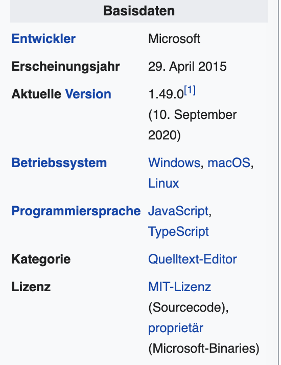
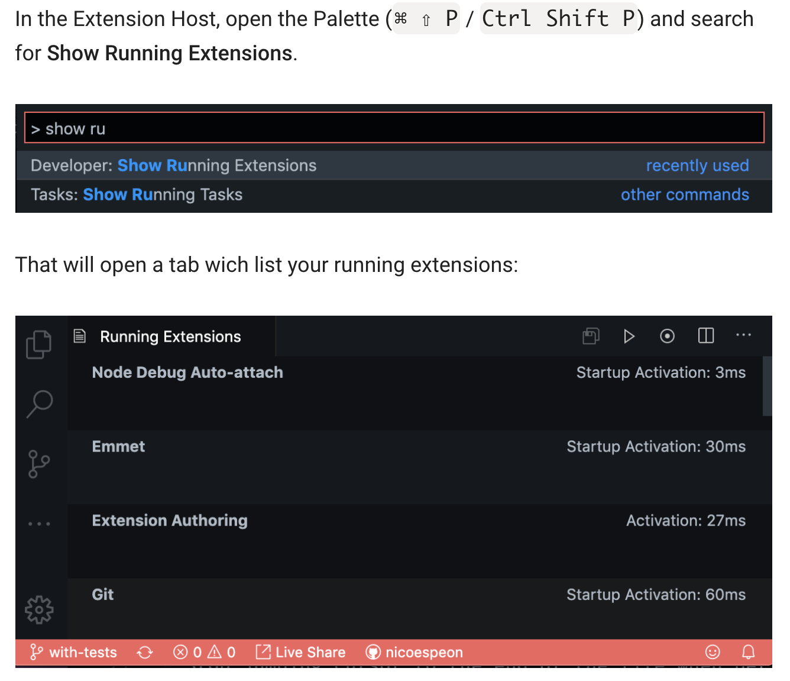
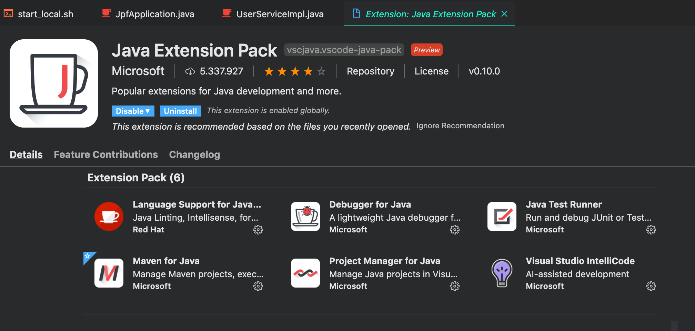
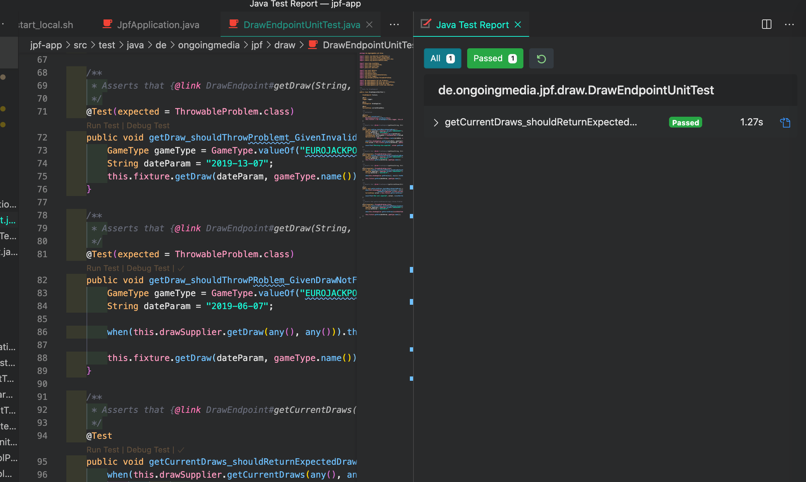
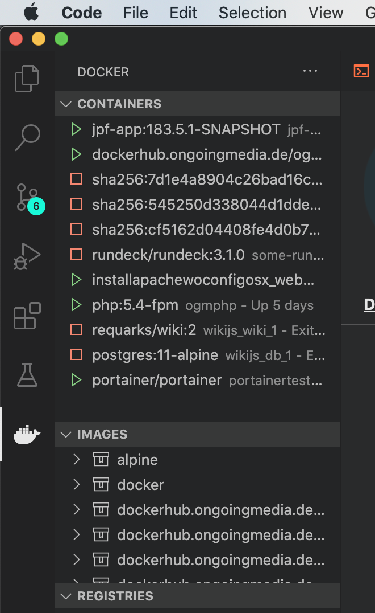

VSCode Techtalk
Einleitung

Quelle: Wikipedia
Einleitung
- hat nichts mit Visual Studio gemeinsam
- VSCode arbeitet auf Dateien und Ordnern und nicht Projektdateien
- basiert auf dem Framework Electron
Entwicklung
- wird von einem Team in der Schweiz entwickelt, geleitet von Erich Gamma
- Quelloffenes Projekt auf Github
- Monatliches Versions-Update mit neuen Features
- Bugfixes innerhalb des Monats
VSCodium
- Binaries auf der MS-Seite haben Telemetrie-Funktionen eingebaut😤
- VSCodium ist frei davon👍🏻
VSCode Features
- VSCode ist ein Editor und keine IDE☝️
- soll schnell und leichtgewichtig sein🏃♀️
- Integration mit bestehenden Tools
Integrierte Tools
Praxis
Für alle etwas dabei
Installation
- Eine Installation für alle Sprachen
- Settings Sync Erweiterung ❤️
- Eingebautes Performance Monitoring für Plugins 
Emmet Abbreviation
Emmet - Wrap Lines
Python Interactive Mode
- IPython Features in normalen Python Files 🤯
Navigation
- ⌃ + R - Opens recent workspaces
- ⌘ + J - Terminal
- Alt + Click - Multicursor
Go-To-Symbol
Java Extension Pack
Maven Support
Junit Support
Docker Support
DrawIO Integration
Fazit
- Schnelle Bedienung
- Integration durch Plugins ist sehr gut 💊
- Erweiterbarkeit 🛒
- Sichern der Einstellungen und Plugins auf Github 👌